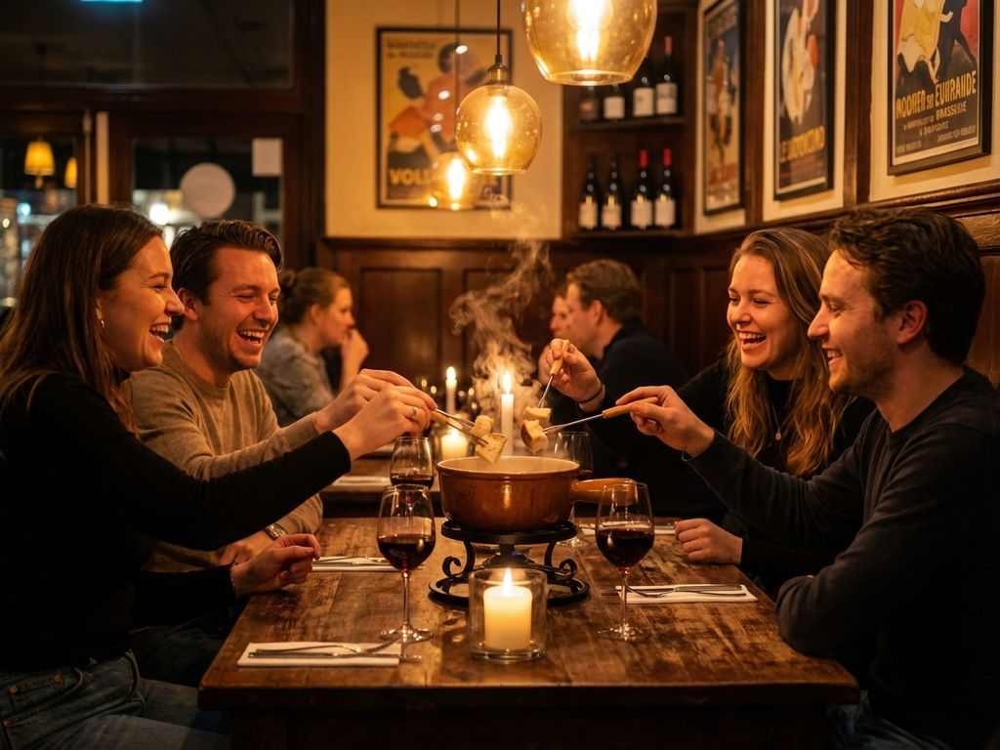

Iets bijzonders te vieren?
Heb je iets te vieren en wil je uitpakken of een ruimte voor jezelf? Dat kan bij De Walrus! Of het nu gaat om een verjaardag, babyshower, trouwdag of jubileum: we maken er samen een bijzondere dag van.
Ook voor zakelijke evenementen ben je bij ons aan het juiste adres. Denk bijvoorbeeld aan een personeelsfeest, netwerkavond, vergadering of een gezellige borrel met collega's.
Voor ieder moment
Verjaardag
Vier je verjaardag gezellig met vrienden en familie. Wij zorgen voor een sfeervolle plek, lekkere hapjes en drankjes.
Babyshower
Organiseer een gezellige babyshower en maak er samen een onvergetelijke middag van.
Jubileum
Een mijlpaal verdient een bijzonder moment. Vier je jubileum met een uitgebreid diner, borrel of feest.
Zakelijk event
Van personeelsfeest tot netwerkavond of vergadering. We denken graag mee over de invulling van jouw zakelijke bijeenkomst.
Een ruimte voor jezelf
Wil je graag een eigen ruimte voor jouw gezelschap? Bij De Walrus is er ruimte voor verschillende soorten evenementen en gezelschappen.
We kunnen samen kijken naar de gewenste opstelling, hapjes, drankjes en andere wensen. Zo zorgen we ervoor dat jouw event helemaal aansluit bij de gelegenheid.

Jouw event bij De Walrus
Heb je al een idee voor jouw evenement? Neem contact met ons op en vertel ons wat je in gedachten hebt. Samen maken we er een mooi en gezellig event van.
Neem contact op